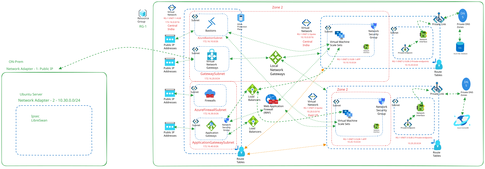
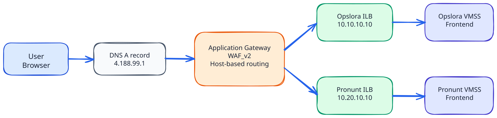
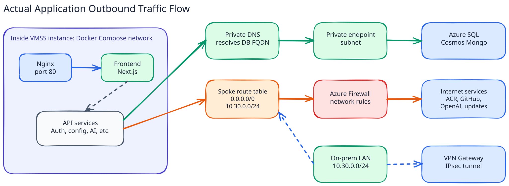
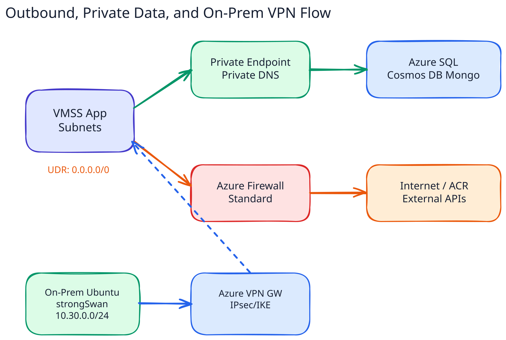

Deploying Two Three-Tier Applications on Azure
A presentation architecture showing secure ingress, regional spokes, private data access, VMSS scaling, and site-to-site VPN integration with on-prem.
- Automate cloud infrastructure with modular Terraform.
- Deploy apps using ACR, cloud-init, and Docker Compose.
- Explain traffic flow, isolation, routing, and security controls.
- Show hybrid connectivity from on-prem to Azure spokes.
Complete Architecture View

Architecture Decisions
Hub centralizes shared controls: WAF/App Gateway, Firewall, Bastion, VPN Gateway, and routing boundaries.
Opslora runs in Central India, Pronunt in East US. Each workload has its own VNet, subnet, NSG, route table, and VMSS.
Single public Application Gateway routes by hostname: opslora.com and pronunt.com.
Azure SQL and Cosmos DB Mongo API are exposed through private endpoints and private DNS.
Spoke UDRs send default and on-prem routes through Azure Firewall Standard with classic network rules.
Terraform modules build infra; cloud-init starts Docker Compose from ACR images on VMSS instances.
Network Topology and CIDR Plan
- 172.16.0.0/16
- Bastion subnet: 172.16.10.0/26
- GatewaySubnet: 172.16.20.0/24
- AzureFirewallSubnet: 172.16.30.0/26
- ApplicationGatewaySubnet: 172.16.40.0/26
- Opslora spoke: 10.10.0.0/16, app subnet 10.10.10.0/24
- Pronunt spoke: 10.20.0.0/16, app subnet 10.20.10.0/24
- Private endpoint subnets: 10.10.20.0/24, 10.20.20.0/24
- On-prem LAN: 10.30.0.0/24
Hub peers with both spokes. Spokes use remote gateway transit for VPN reachability, and allow forwarded traffic so Firewall/App Gateway flows can traverse the hub.
Inbound Flow: User to Application

Security Controls in the Path
- Only App Gateway has public application ingress.
- WAF_v2 policy uses OWASP managed rules in prevention mode.
- App Gateway subnet NSG allows Internet HTTP/HTTPS and GatewayManager ports.
- Spoke app NSGs allow HTTP/HTTPS only from 172.16.40.0/26.
- Bastion subnet is the admin entry point for SSH.
- On-prem source 10.30.0.0/24 is explicitly allowed to spokes.
- Private endpoints avoid public DB exposure.
- UDRs steer spoke egress and on-prem routes through Azure Firewall.
The design does not rely on one control. DNS, WAF, listeners, NSGs, route tables, Firewall rules, private endpoints, and VPN crypto policy all participate in reducing the exposed surface.
Actual App Outbound Flow

Hybrid Flow: On-Prem to Azure

- Local network gateway represents laptop public IP and 10.30.0.0/24.
- Azure VPN Gateway uses AZ SKU and custom IPsec policy.
- Spoke peering uses gateway transit so both spokes can be reached through hub VPN.
- Firewall rules allow on-prem to app spokes for controlled ports.
High Availability and Scalability
WAF_v2 supports autoscale from 1 to 3 capacity units and health-probes regional backend pools.
Each application runs on a Linux VM scale set with min 1 and max 3 instances. Autoscale rules react to CPU.
Pronunt runs in East US while Opslora runs in Central India, proving multi-region workload placement.
Internal Standard Load Balancers provide stable private frontend IPs for App Gateway backend pools.
DDoS protection is attached to hub and spoke VNets as a network-level resilience control.
Managed SQL and Cosmos DB reduce VM-level database operations and integrate with private endpoints.
Automation and Demo Close
- Terraform modules for network, security, WAF, VMSS, databases, private endpoints, VPN, and routing.
- ACR-backed images for both applications.
- Cloud-init bootstraps Docker Compose on VMSS instances.
- DNS A records map both domains to the App Gateway public IP.
- Why hub-spoke simplifies governance.
- How host-based routing maps one gateway to two apps.
- How NSGs, UDRs, Firewall, and WAF each block a different risk.
- How on-prem traffic enters privately over VPN.
http://opslora.com and http://pronunt.com route to healthy frontend pools through Application Gateway.